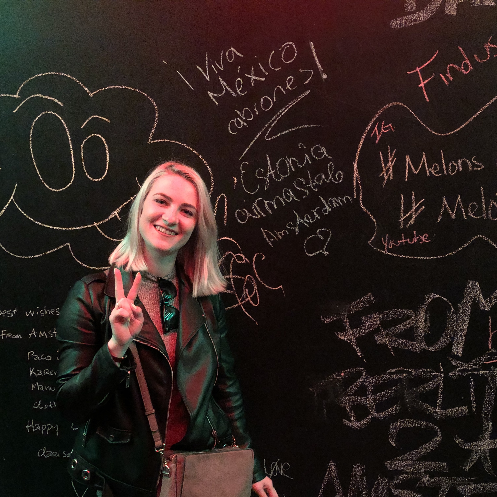
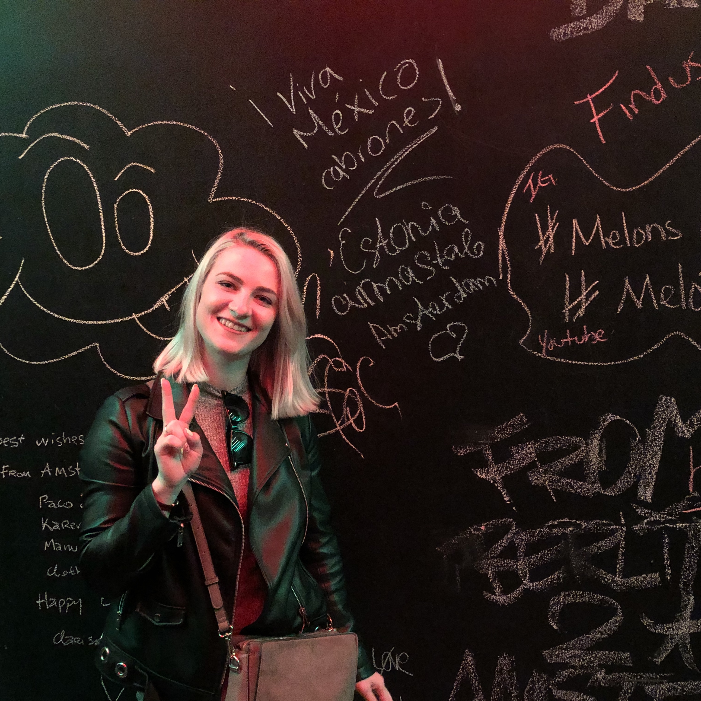

Hi! I'm Yulia Bauman, a Russian girl from Estonia who currently studies UX Design in the Hague. Have a closer look, I want to tell you a bit about myself.
 

It's me: upcoming UX designer, world observer, curious
learner, caring friend, sports lover.
I am a former International Business student who was always curious
about design and IT industry. When I was 15 I moved to Moscow
looking for new opportunities and challenges. I got there my first
bachelor degree in business and worked there for couple of years
before I decided to move forward. Eventually, I got interested in
UX/UI design and this is how I ended up getting the second bachelor
degree in The Hague University of Applied Sciences.
Why UX design? I always wanted to make an impact for people and society, make our life more convenient and full of aesthetics. I believe that design is also important for businesses even though some might underestimate its power. Nowadays online presence is an integral part of companies' image and customers loyalty starts from their experience with online platforms. When I use different digital platforms, I always have in my mind thoughts what could be done differently and how the product could be improved. I care and think about user experience and that is why I want to be a person who makes it better and evoke emotions with my design.
What inspires me. To be honest, I believe it is just everything I see and feel every day. I get inspiration from architecture, interiors, people, music. I believe if you look around and acknowledge what is around you, you will never run out of inspiration. I especially like simplistic and consistent design, that is why I am in love with scandinavian style. It represents everything I believe in - simplicity, consistency and efficiency. Of course, other people are also a big part of my inspiration and that is why I am always curious about other designers' and artists' works and lifestyle.
But really, WHO am I? I am an ambiverted person who loves spending time and having fun with other people, but I need time by myself to recharge my social battery. I love reading books and learning something new every day. I'm also very much into sports and throughout my life tried more than 15 different sports. Now snowboarding, pole dancing, stretching and other active sports are big part of my life.
Here is something I would like you to know about my personality and my values. I'm a hard-working person with some signs of a perfectionist. I'm caring and I believe that kindness will save the world. If you asked my friends to describe me they would say that I am a funny and positive person who always looks for a reason to smile. I'm easy-going but get totally serious when it is needed. I want to make an impact and leave something valuable in this world.
What I am up for now. Currently I am learning and practicing design aspects every day (even in my spare time because I just cannot stop thinking about it). I surrounded myself with inspiration, books, movies, people and everything else that is related to design. For now I am looking for opportunities to move more from theory to practice, that's why I try to find interesting projects in which I could contribute. Even though I'm in the beginning of my path as a designer, I'm seeking for improvement and growing in UX/UI design and work on it every day with great passion.
Work experience
Customer Service Representative
CMA CGM, Tallinn Estonia
Dec 2017 - Aug 2020
- Duties of France country team Lead
- Creation of logistics bookings
- Mentoring new-hires
- Participating in launching new projects
- Support Team Lead (make team reports, projects support)
Clients Support Specialist
Rocketbank, Moscow Russia
Apr 2017 - Jun 2017
- Technical support of clients
- Consulting
- Conflict resolution
Office Assistant
Webgames, Moscow Russia
Oct 2016 - Mar 2017
- Administrative support of the office
- Assistance in organising corporate events
- HR-director assistance (CV selection, participation in interviews, adaptation of new colleagues